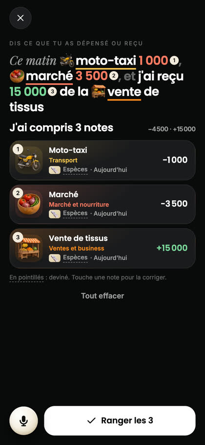
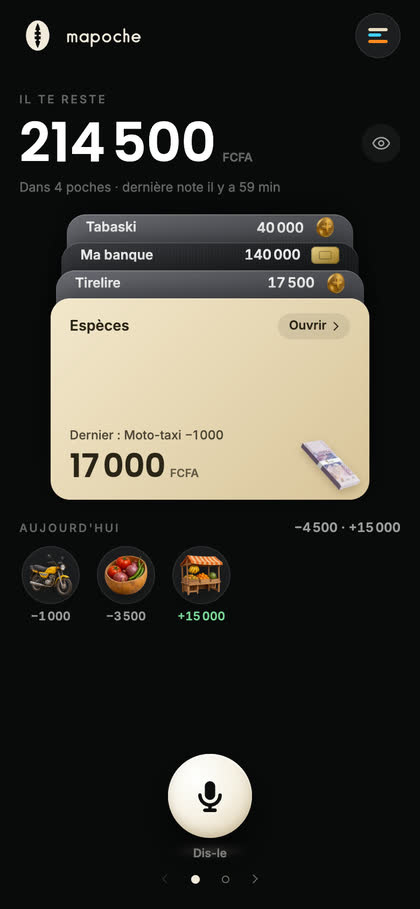
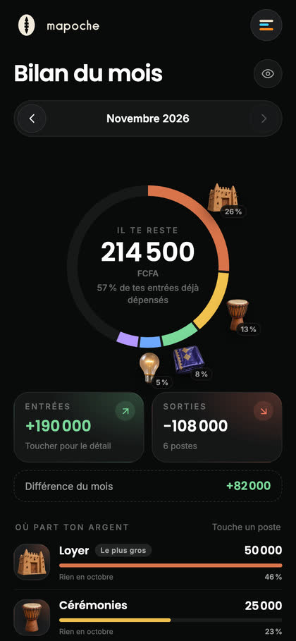
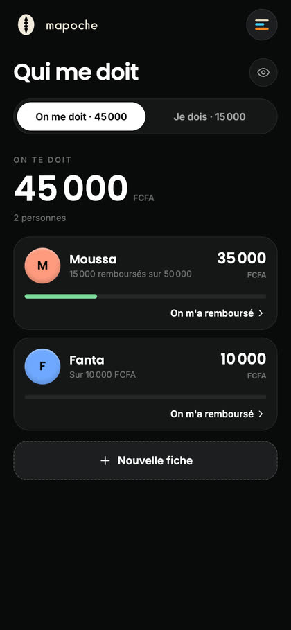
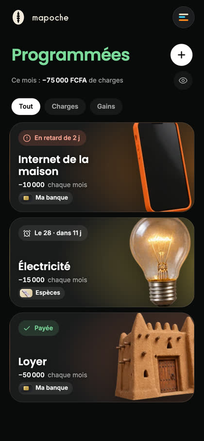
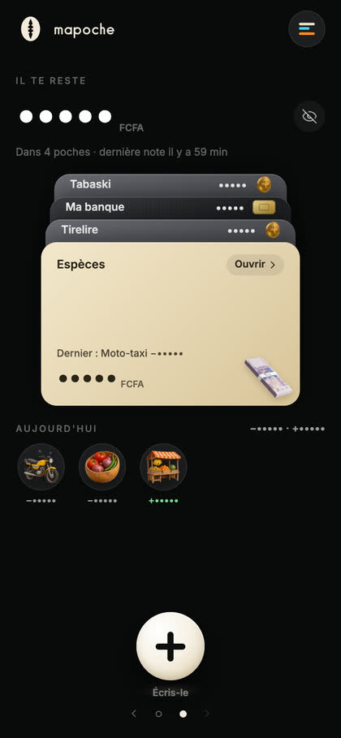

À la fin du mois, toi aussi tu ne sais pas où part ton argent ?
Gère ton argent
de poche.
Voici la solution : dis ce que tu dépenses, MaPoche le note, le range et te montre ce qu'il te reste. Sans compte, tout reste sur ton téléphone.
Gratuite · Sans compte · Sans publicité
Écran par écran
Toute l'app, d'un geste.






Glisse pour voir les six écrans
Confidentialité
Tes chiffres ne quittent jamais ton téléphone.
Pas de compte · Pas de publicité · Aucun serveur
Lire la politique de confidentialitéMali · Sénégal · Côte d'Ivoire · Burkina Faso · Niger · Guinée
En FCFA, et en francs guinéens en Guinée.Aide
Les questions qu'on nous pose.
Combien coûte MaPoche ?
Rien. MaPoche est gratuite, sans publicité et sans achat dans l'app.
Faut-il internet pour utiliser MaPoche ?
Non. Tout fonctionne sans internet. Seule la voix peut en avoir besoin, selon ton téléphone : si le français n'est pas installé pour la reconnaissance vocale sans connexion, le téléphone passe par internet. Sans réseau, note au clavier.
Quel téléphone faut-il ?
Un Android 7 ou plus récent. Si MaPoche te demande une mise à jour, mets à jour « Android System WebView » ou Chrome dans le Play Store. Sur iPhone, il faut iOS 15.4 ou plus récent : MaPoche est en cours de validation chez Apple, le bouton App Store y mènera dès sa publication.
Dans quels pays et quelles monnaies ?
Mali, Sénégal, Côte d'Ivoire, Burkina Faso et Niger en FCFA, et Guinée en francs guinéens (GNF). Tu choisis ton pays au premier lancement, et tu peux le changer ensuite.
MaPoche est-elle reliée à mon compte mobile money ou à ma banque ?
Non. MaPoche est un carnet : c'est toi qui notes ce que tu dépenses et ce que tu reçois. Elle ne se connecte à aucun compte, ne fait aucun paiement et ne déplace aucun argent réel.
Je change de téléphone : comment garder mes notes ?
Avant de changer, exporte tes notes en CSV depuis « Mon compte » et garde le fichier. La sauvegarde en ligne n'existe pas encore : tes notes ne quittent jamais ton téléphone sans toi.
J'ai oublié mon code à 4 chiffres.
Touche « Code oublié ? » sur l'écran du code. Si l'empreinte est activée, elle te permet de choisir un nouveau code. Sinon, il faut tout effacer et recommencer : pour ta sécurité, personne ne peut retrouver ton code, même nous.
Comment tout effacer ?
Dans « Mon compte », touche « Tout effacer ». Supprimer l'app efface aussi toutes ses données du téléphone.
Contact